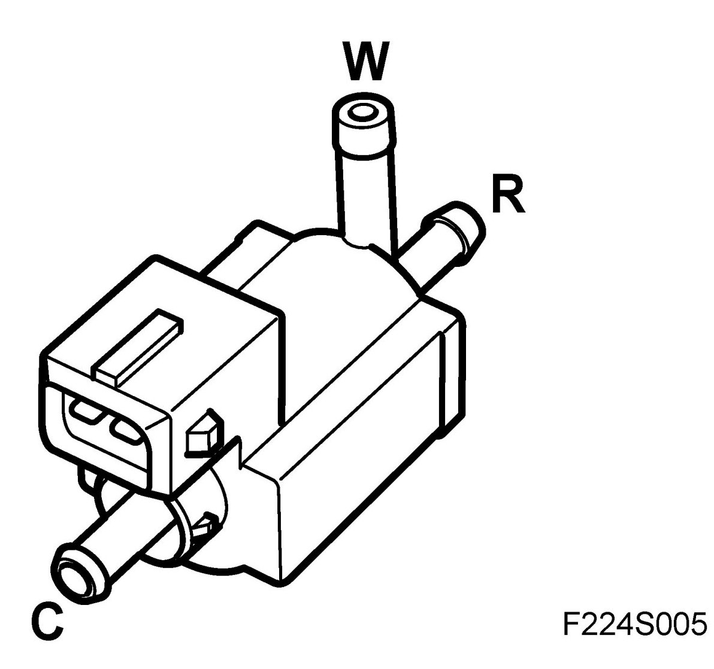
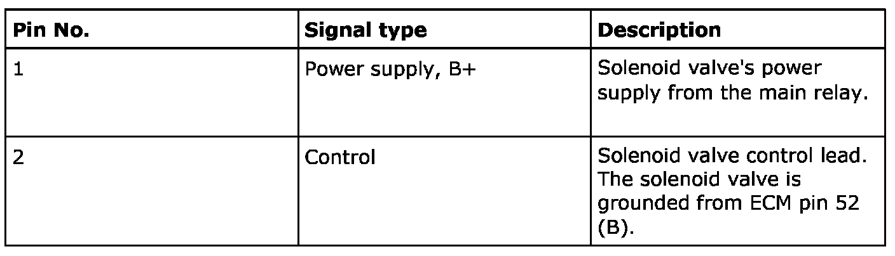
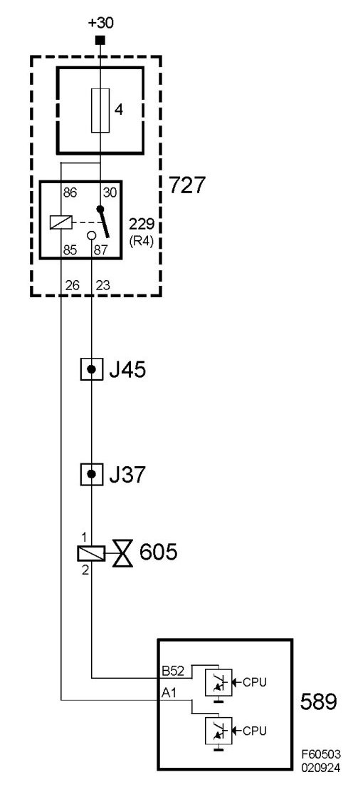

Air Bypass Valve Solenoid: Description and Operation
Solenoid Valve, Turbo Bypass (605), T8
Location
Solenoid valve, turbo bypass (605)
Principal use
Check the function of the bypass valve
Type

Connection

Diagram

Function
When the throttle closes an underpressure is quickly created in the intake manifold by means of combustion, while the overpressure before the throttle remains. In order to avoid pressure shocks in the intake manifold with subsequent jerking, when the throttle is re-opened the overpressure before the throttle must be released. The bypass valve signal line, which under normal driving is in connection with the outlet before the throttle, is then instead connected with the outlet after the throttle by means of a solenoid valve controlled by Trionic.
By means of the underpressure in the intake manifold an underpressure is also obtained on the spring side in the bypass valve. The underpressure means that the valve opens and releases the overpressure from the compressor housing and the intake system in the intake hose. This connection remains active until the pressure before the throttle restabilises itself. After which the connection between the signal line and the outlet before the throttle is re-engaged.